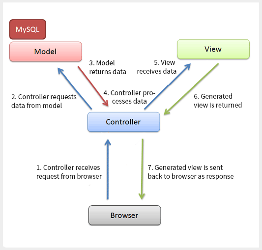

Guida Laravel
Introduzione
Laravel Il framework per “Web Artisans” orientato alla programmazione ad oggetti ed al pattern architetturale MVC (Model-View-Controller) che consente di sviluppare velocemente e facilmente applicazioni in linguaggio PHP massimizzando la produttività delle sessioni di coding.
E' molto probabilmente il framework PHP attualmente più popolare. Conosciuto per la sua sintassi elegante e per la sua curva di apprendimento bassa, Lavarel è sicuramente il compagno di lavoro perfetto per molti sviluppatori moderni.
Un pò di storia
“Laravel è un framework open source di tipo MVC scritto in PHP per lo sviluppo di applicazioni web, creato nel 2011 da Taylor Otwell come derivazione di Symfony. Laravel è distribuito con licenza MIT e mantiene tutto il codice disponibile su GitHub”
MVC - Model View Controller
Il Design architetturale, forse, più famoso ed utilizzato nella programmazione web è quello MVC: Model, View, Controller.
Questo pattern si preoccupa di separare e isolare le diverse parti del nostro codice.
In questo modo separeremo la logica di business da tutto ciò che è la logica di presentazione.
Laravel segue alla lettera l’architettura MVC.

M == Model
Il model (o modello) cattura il comportamento dell’applicazione in termini di dominio del problema.
Modellizza un aspetto della realtà trasformandolo in una classe (di più sulle classi) fornendo alla logica della nostra applicazione i metodi per accedere ai dati utili all’applicazione.
I MODEL sono i dati.
V == View
La view, o vista, può essere una qualsiasi rappresentazione di output di informazioni.
È quella parte che fa vedere i dati e che da la possibilità di interazione all’utente
Le view sono ciò che vede l’utente.
C == Controller
Il controller, è la logica dell’applicazione che fa da tramite tra il il model (i dati) e la view (l’output) in entrambe le direzioni.
Il controller è il cervello
Il controller, quindi, può prendere i dati dal Model e passarli alla View, e riceve i comandi dell'utente (in genere attraverso il view) e li attua modificando lo stato degli altri due componenti.
Riga di comando
Tutti gli script inizieranno per php artisan e continueranno con il nome dello script.
Per vedere tutti i comandi disponibili possiamo utilizzare php artisan list e quando non siamo sicuri di come usare gli script potremo inserire --help dopo lo script per avere più informazioni.
Creare un nuovo progetto:
composer create-project --prefer-dist laravel/laravel nome-cartella
Creare un progetto laravel specificando la versione
composer create-project --prefer-dist laravel/laravel nome-cartella "7.*"
ORM (Object Relationship Mapping)
Creare MODEL:
php artisan make:model ModelName
Creare le tabelle - MIGRATIONS:
php artisan make:migration create_users_table
NB: i nomi devono essere scritti in plurale
Aggiornare le tabelle - MIGRATIONS:
php artisan make:migration update_users_table --table=users
Eseguire le Migration
php artisan migrate
Tornare un passo indietro
php artisan migrate:rollback
Resetta il database(tutte le migrations)
php artisan migrate:reset
CRUD
Controller con lo scheletro base.
php artisan make:controller NomeController
Controller con le CRUD
php artisan make:controller --resource NomeController
Verificare le Route:
php artisan route:list
SEEDERS
Creare i file seeder
php artisan make:seeder UsersTableSeeder
Eseguiamo il seeder
php artisan db:seed --class=UsersTableSeeder
Eseguiamo tutti i seeders con un unico comando:
php artisan db:seed
Per fare questo dobbiamo modificare il file DatabaseSeeder.php
class DatabaseSeeder extends Seeder
{
public function run()
{
$this->call([
UsersTableSeeder::class,
PostsTableSeeder::class
]);
}
}
RELATIONS: many-to-many
Creare una tabella ponte o pivot
php artisan make:migration create_user_role_table
Laravel Authentication
Installiamo laravel/ui:
composer require laravel/ui
Creiamo lo scaffolding auth con bootstrap:
php artisan ui bootstrap --auth